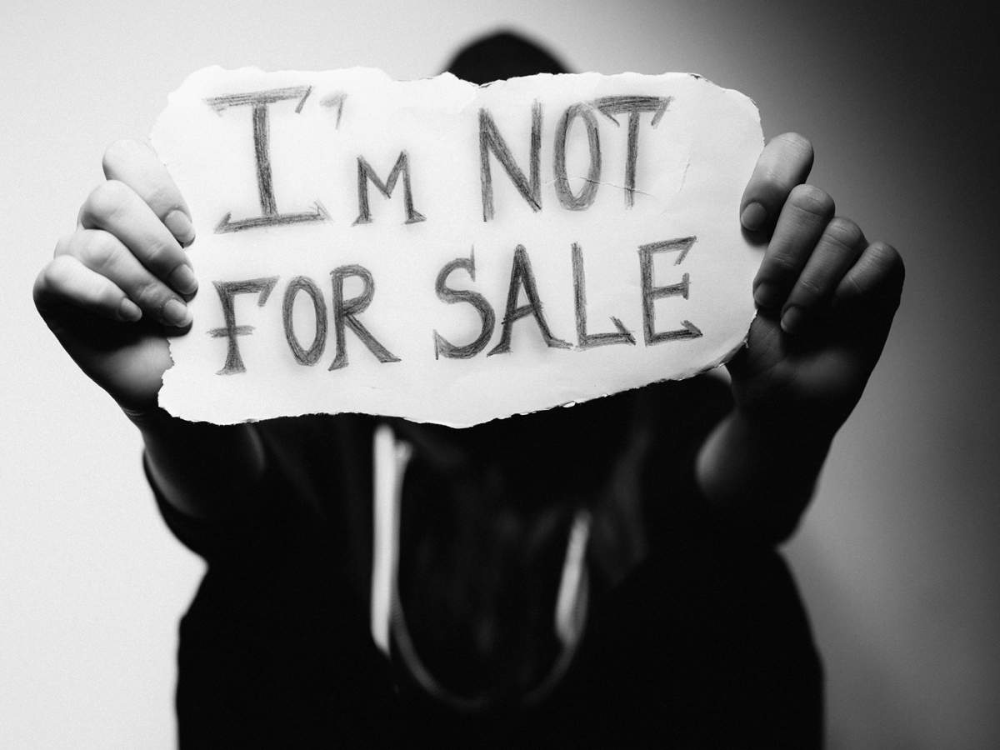

What is Child Trafficking?
Child trafficking is the exploitation and abuse of children, often involving forced labor, sexual exploitation, and organ harvesting.
Statistics
- There are over 40 million victims of modern slavery worldwide, with the majority being children.
- 1 in 5 children are victims of child trafficking.
- The average age of a child trafficking victim is 12-14 years old.
How to Help
There are many ways to help prevent child trafficking, including:
- Donating to organizations that work to prevent child trafficking.
- Volunteering your time to help raise awareness about child trafficking.
- Reporting suspected cases of child trafficking to the authorities.